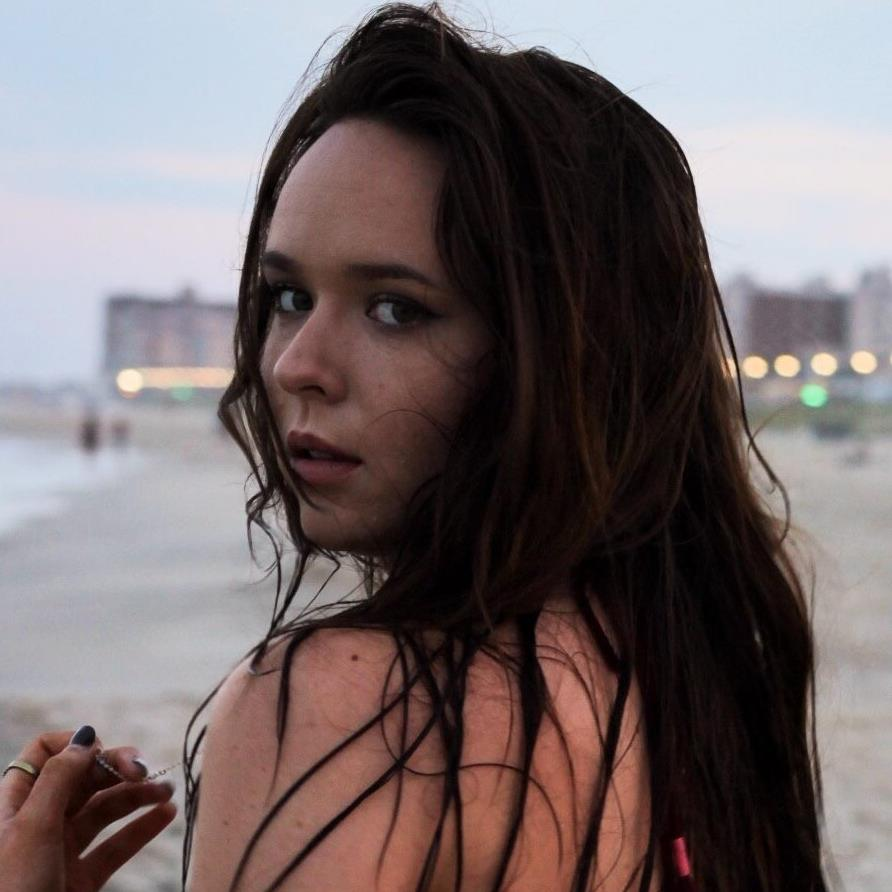

I was born on January 14, 1999 in Northern New Jersey during that winter's worst ice storm. I grew up in a small town, not even a mile long, named Hasbrouck Heights. While, growing up wasn't too bad, I look back now and wonder how I ever survived such an exclusive space. Luckily, I grew up right next to New York City, the only thing separating us was a 15 minute drive and a toll booth. So frequently, my mom would take me in to see Broadway shows and eat at restaurants that are a lot nicer than what you get in Dirty Jersey (shoutout to single moms)! This access to the greatest city in the world helped me to fall in love at such a young age, knowing that this is where I'd want to be an independent and pave the way to my future.
Some passions of mine include political activism (with an emphasis on gun control and LGBTQ+ rights), attempting to cook meals for my girlfriend, hiking, camping, pretending I have no responsibilities and am still a child at Disney World, shopping, traveling, The Bachelor and filmmaking- my new found love. So far, studying at Eugene Lang College of Liberal Arts at the New School has helped me be more in touch with individuality and what it is that I truly want to do within my life.
My number one passion in life, however, is music. When I was just a little girl my dad exposed me to all different kinds of music. I can vividly remember our basement- a place where it was easy to get lost amongst all of the records and instruments. At the age of 9, I began to professionally train in my vocals and started to learn how to pluck the guitar. By the time I was 14, I began to write my own music and it continues to be my comfortable place to this very day.
Just this past summer I was able to go down to Nashville, TN, AKA the Music City and play some of my own original music to several audiences. From that, it was reaffirmed that I wasn't half bad and that music is someting I'd want to keep up no matter what direction life takes me. I am a folk/rock influenced musician and am inspired by artists such as Jewel, Laura Marling, Joni Mitchell, Bob Dylan,and many many more. I also post weekly YouTube videos but I'm most excited to finally release my own music!
Some tunes that I am loopin' on Spotify